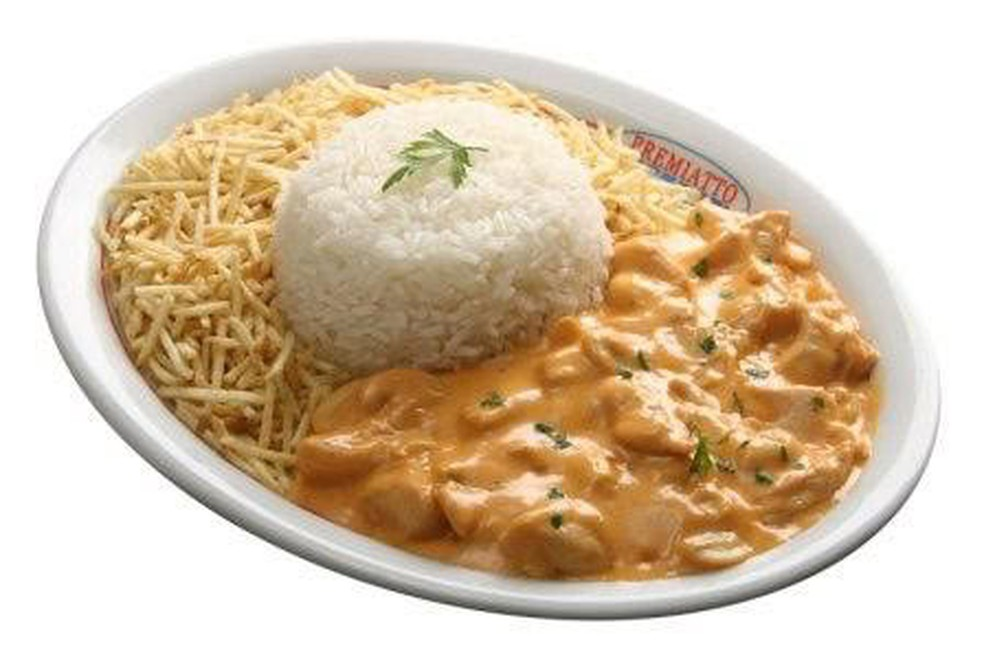

Uma receita clássica que pode ser combinada com várias opções!
Strogonoff

INGREDIENTES
- 3 peitos de frango cortados em cubos
- 1 dente de alho picado
- sal e pimenta a gosto
- 1 cebola picada
- 2 colheres (sopa) de maionese
- 1 colher de manteiga
- 1/2 copo de ketchup
- 1/3 copo de mostarda
- 1 copo de cogumelos
- 1 copo de creme de leite
- batata palha a gosto
MODO DE PREPARO
- 1.Em uma panela, misture o frango, o alho, a maionese, o sal e a pimenta.
- 2.Em uma frigideira grande, derreta a manteiga e doure a cebola.
- 3.Junte o frango temperado até que esteja dourado.
- 4.Adicione os cogumelos, o ketchup e a mostarda.
- 5.Incorpore o creme de leite e retire do fogo antes de ferver.
- 6.Sirva com arroz branco e batata palha.